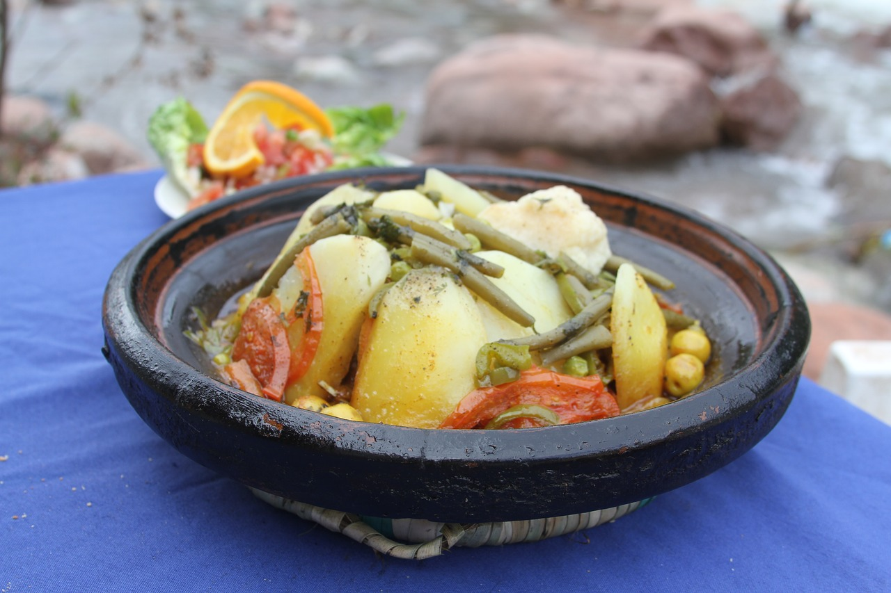
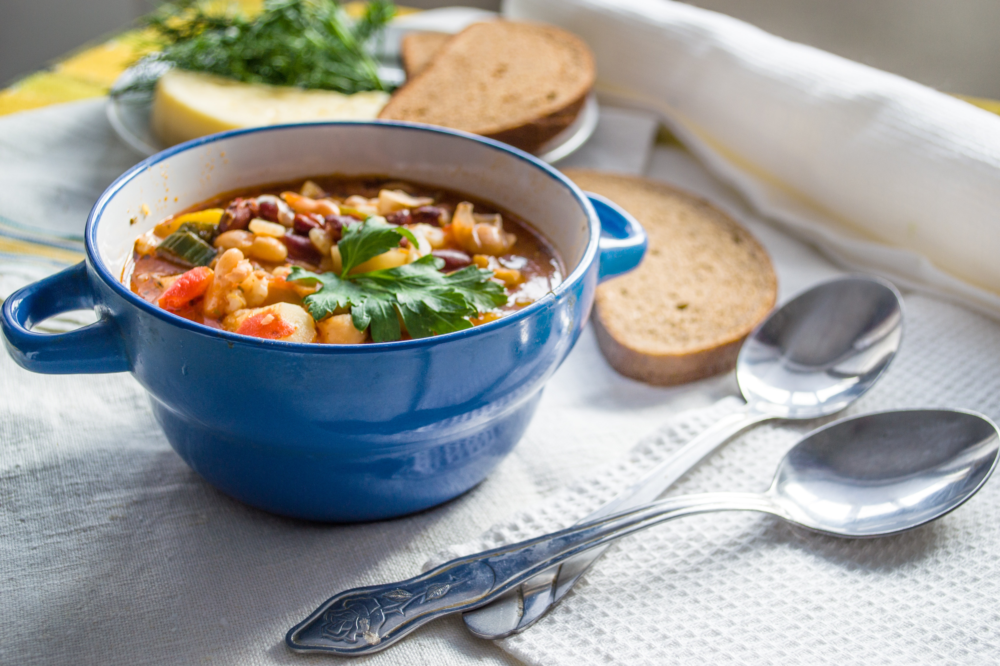

MAIN DISHES

Tangine
Tagine is actually a name for the ceramic pot with a cone-shaped lid. This can be found in every Moroccan cafe and home and is used to create beatiful and aromatic dishes made from meat and vegatables.

Harira
Rich soup made of lentil, tomatoes & lamb, finished off with beautiful spices and squeeze of lemon juice. During month of Ramadan this soup breaks the fast each day at the sunset.